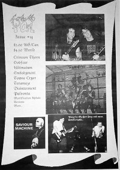

Messiah Prophet
|  |
| 1997 Screams of Abel |
Media coverage:
- 1987 in Heaven's Metal "Messiah Prophet"
- May 1987 in CCM "Messiah Metal", by Devlin Donaldson, Steve Rabey
- Jul 1995 in Heaven's Metal "Whatever Happened To...", by David Muttillo
- 1997 in Screams of Abel "Messiah Prophet", by Miguel Melo
- Jul 1997 in HM "Hardnews: Messiah Prophet"
Albums & reviews:
1984: Rock The Flock
- Jul 1985 in Heaven's Metal, by Doug Van Pelt
- Win 1987 in Harvest Rock Syndicate, by Derek Sinclair
- Feb 1987 in U, by Ross Pavlac
- Feb 1987 in Campus Life, by Jim Long
- May 1987 in CCM, by Devlin Donaldson, Steve Rabey
- Apr 2003 in Nor'Easter, by Chris Gatto
Books about Messiah Prophet
- "1865 Messiah Prophet" in Headbangers: The Worldwide Mega-Book of Heavy Metal (Mark Hale, 1993)
- "Messiah Prophet" in The Encyclopedia of Contemporary Christian Music (Mark Allan Powell, 2002)

© 2011 CMnexus. Last updated September 2019. Contact: editor -AT- cmnexus -DØT- org About